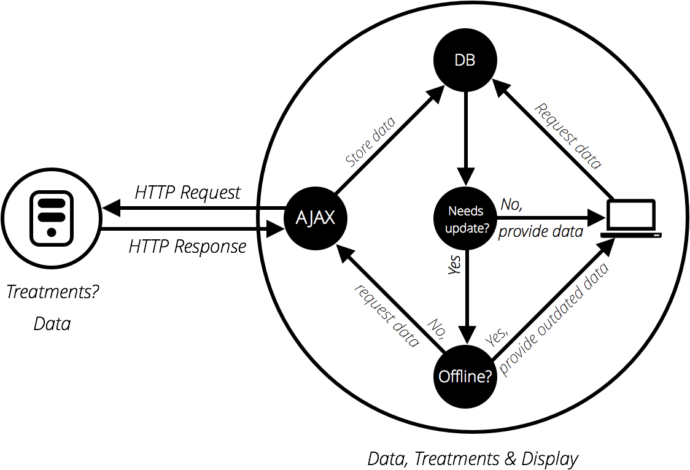

Introducció al JavaScript
Fonaments bàsics
Creat per en Ramon Vilar d'Ymbra
Una mica d’introducció
- El JavaScript (JS) és un llenguatge de programació dinàmic que, aplicat a un document HTML, pot proporcionar interacció i dinamisme a les nostres pàgines web.
- L’estàndard s’anomena ECMAScript
- Actualment en procés d’implantació de la seva versió 6: ES6
- Es poden veure les millores que introdueix a http://es6-features.org
Un exemple senzill
Si partim d'un codi HTML senzill com el següent:
<!DOCTYPE html>
<html>
<head>
My test page
</head>
<body>
Hello world!
</body>
</html>Un exemple senzill
Podem afegir la crida a un fitxer JS tot afegint el següent element abans del tancament de l'etiqueta </body>
<script src="scripts/main.js">Un exemple senzill
I podem afegir aquestes senzilles línies al nostre fitxer main.js
var myHeading = document.querySelector('h1');
myHeading.textContent = 'Hello JavaScript world!';
...i benvinguts al món del JavaScript!
Regles bàsiques
- Tot i que no és obligatori, punt i coma al final de cada línia
- JS és caseSensitive
myvariable !== myVariable
Eines de treball
Les nostres eines de treball bàsiques per a programar JS són:
- Un editor de codi
- Un navegador i la seva consola/depurador
Suport en navegadors
- caniuse.com: Taules de suport per a diverses APIs i propietats HTML5, CSS3 i JS
- babel.js: Biblioteca que transforms ES6 en ES5
Els bàsics
Comentaris
No difereix gaire d'altres llenguatges de programació.
// This is a comment.
/*
This is a block
comment with
multiple lines.
*/
Variables - var
Les variables són contenidors per a valors que es poden usar més tard en sentències programàtiques.
var myName;
var mySurname;
myName = 'Ramon';
mySurname = 'Vilar';
var myAge = 34;Variables - var
L'àmbit d'una variable declarada amb var és el seu context d'execució, és a dir, la funció que l'envolta o, en cas de no haver-hi funció, el seu àmbit seria global.
Les variables en JS poden ser redeclarades (i no perden el seu valor).
Variables - var
function x() {
y = 1; // ReferenceError in strict mode
var z = 2;
}
x();
console.log(y); // logs "1"
console.log(z); // ReferenceError: z is not defined outside xVariables - var
La declaració de variables es processa abans que s'executi cap codi.
bla = 2;
var bla;
// is implicitly understood as:
var bla;
bla = 2;
Per tant, es recomana que sempre es declarin les variablesa l'inici del nostre codi i/o funcions.
Variables - let
ES6 introdueix les variables s'ambit de bloc
let x = 1;
if (x === 1) {
let x = 2;
console.log(x);
// expected output: 2
}
console.log(x);
// expected output: 1
Variables - let
function varTest() {
var x = 1;
if (true) {
var x = 2; // same variable!
console.log(x); // 2
}
console.log(x); // 2
}
function letTest() {
let x = 1;
if (true) {
let x = 2; // different variable
console.log(x); // 2
}
console.log(x); // 1
}
Variables - const
ES6 també introdueix un tipus especial de variables de bloc però que el seu valor esdevé constant i no es pot declarar.
const number = 42;
try {
number = 99;
} catch(err) {
console.log(err);
// expected output: TypeError: invalid assignment to const `number'
// Note - error messages will vary depending on browser
}
console.log(number);
// expected output: 42
Nombres
En programació hi ha diversos tipus numèrics
- Enters
- Coma flotant
- Doubles
- Binari
- Octal
- Hexadecimal
A JS tot són number
Nombres
var myInt = 5;
var myFloat = 6.667;
typeof myInt; // "number"
typeof myFloat; // "number"
Operadors
- Aritmètics:
+,-,*,/,% - Increment/decrement:
++,-- - Assignació amb increment:
+=,-=,*=,/= - Comparació:
===,!==,<,>,<=,>=
Operadors de comparació
És correcte l'ús de == i de ===, però no funcionen igual.
L'ún comprova els valors i l'altre a més a més, els tipus.
"" == false // true
"" === false // false
Strings
Es poden declarar usant " o '.
Es recomana escollir un dels dos i usar sempre el mateix.
var single = 'Single quotes.';
var double = "Double quotes.";
Strings - concatenació
Es poden concatenar strings usant +.
var one = 'Hello, ';
var two = 'how are you?';
var joined = one + two;Strings - mètodes
Per saber la mida d'una cadena, podem usar el mètode length.
var myName = "Ramon";
myName.length // 5Strings - mètodes
Per accedir als caràcters d'una cadena es pot usar la notació d'array [].
myName[0] // 'R'
myName[myName.length -1] // 'n'Strings - mètodes
Pot interessar veure si part d'una cadena existeix dins d'una altra. Per això es pot usar indexOf().
myName.indexOf('mon'); // 2
myName.indexOf('Marta'); // -1Strings - mètodes
Es poden extreure parts d'una cadena usant slice().
myName.slice(0, 3); // 'Ram'
myName.slice(2); // 'mon'Strings - mètodes
El canvi de caixa és una de la típica operació de programació.
var radData = 'My NaMe Is èLIa';
radData.toLowerCase();
radData.toUpperCase();Strings - mètodes
Podem reemplaçar parts d'un string usant replace()
myName.replace('mon', 'fel');Strings - Exercici
var greetings = ['Feliç aniversari!',
'Bon Nadal amic meu',
'Un bon Nadal a tota la família!',
'Us vull a tots per Nadal',
'Sigueu feliços sempre'];
for (var i = 0; i < greetings.length; i++) {
var input = greetings[i];
// Si només vull veure felicitacions del Nadal.
if (greetings[i]) {
console.log(input);
}
}Strings - Exercici
var cities = ['lonDon', 'ManCHESTer', 'BiRmiNGHAM', 'liVERpoOL'];
for(var i = 0; i < cities.length; i++) {
var input = cities[i];
// write your code just below here
console.log(input);
}Strings - Exercici
var stations = ['MAN675847583748sjt567654;Manchester Piccadilly',
'GNF576746573fhdg4737dh4;Greenfield',
'LIV5hg65hd737456236dch46dg4;Liverpool Lime Street',
'SYB4f65hf75f736463;Stalybridge',
'HUD5767ghtyfyr4536dh45dg45dg3;Huddersfield'];
for (var i = 0; i < stations.length; i++) {
var input = stations[i];
// write your code just below here
console.log(input);
}
Arrays
Es declaren usant claudàtors [].
var shopping = ['bread', 'milk', 'cheese', 'hummus', 'noodles'];
var sequence = [1, 1, 2, 3, 5, 8, 13];
var random = ['tree', 795, [0, 1, 2]];Arrays - Accés i modificació
S'accedeix utilitzant [].
shopping[0]; // returns "bread"
shopping[0] = 'tahini';
shopping; // [ "tahini", "milk", "cheese", "hummus", "noodles" ]Arrays - Mida
Per saber la mida d'un array usem length.
sequence.length; // 7No confonguem mida amb número de valors. length retorna el darrer índex + 1.
sequence[100] = 23;
sequence.length; // 101Arrays - Mètodes
Diverses formes de passar entre string y array.
var myData = 'Manchester,London,Liverpool,Birmingham,Leeds,Carlisle';
var myArray = myData.split(',');
myArray[0]; // 'Manchester'
myArray[myArray.length - 1]; // 'Carlisle'
var myNewString = myArray.join(',');
var dogNames = ["Rocket","Flash","Bella","Slugger"];
dogNames.toString(); //Rocket,Flash,Bella,SluggerArrays - Mètodes
Es poden afegir y treure elements del final d'un array usant push() i pop().
var myArray = ['Manchester', 'London', 'Liverpool', 'Birmingham', 'Leeds', 'Carlisle'];
myArray.push('Cardiff');
myArray.push('Bradford', 'Brighton');
var newLength = myArray.push('Bristol');
myArray.pop(); // 'Bristol'
var removedItem = myArray.pop(); // 'Brighton'Arrays - Mètodes
Igualment es poden afegir y treure elements del principi d'un array usant unshift() i shift().
myArray.unshift('Edinburgh');
var removedItem = myArray.shift();Arrays - Exercici
var total = 0;
// TODO
'Underpants:6.99'
'Socks:5.99'
'T-shirt:14.99'
'Trousers:31.99'
'Shoes:23.99';
for (var i = 0; i <= 0; i++) { // TODO
// TODO
itemText = 0;
console.log(itemText);
}
console.log('Total: ' + total.toFixed(2) + ' €');Condicionals
if (condition) {
// code to run if condition is true.
} else if (condition2){
// run some other code instead.
} else {
// run some other code instead.
}Un apunt important
Qualsevol que no sigui false, undefined, null, 0, NaN o un string buit ('') retorna true.
var cheese = 'Cheddar';
if (cheese) {
console.log('Yay! Cheese available for making cheese on toast.');
} else {
console.log('No cheese on toast for you today.');
}Operadors lògics
if (choice === 'sunny' && temperature < 86) {
// Your code.
} else if (iceCreamVanOutside || houseStatus === 'on fire') {
// More code.
}Més condicionals
switch (expression) {
case choice1:
// run this code
break;
case choice2:
// run this code instead
break;
default:
// actually, just run this code
}Bucles
for (var i = 0; i < cats.length; i++) {
info += cats[i] + ', ';
}Podem sortir de qualsevol bucle fent servir break.
Podem saltar a la següent iteració d'un bucle fent servir continue.
Bucles
var i = 0;
while (i < cats.length) {
if (i === cats.length - 1) {
info += 'and ' + cats[i] + '.';
} else {
info += cats[i] + ', ';
}
i++;
}Bucles
var i = 0;
do {
if (i === cats.length - 1) {
info += 'and ' + cats[i] + '.';
} else {
info += cats[i] + ', ';
}
i++;
} while (i < cats.length);Exercici
Només volem deixar entrar aquells que comença el seu nom per A, B o C.
var people = ['Chris', 'Anne', 'Colin', 'Terri', 'Phil', 'Lola', 'Sam', 'Kay', 'Bruce'];
var admitted = [];
var refused = []
// TODO.
console.log(admitted);
console.log(refused);Funcions
La declaració d'una funció, generalment, consta de function + paràmetres + les seves sentències entre claus
function square(number) {
return number * number;
}Valor vs. referència
Els tipus primaris es passen per valor (qualsevol canvi fet en una funció, no afecta al valor fora de l'àmbit d'aquesta).
En canvi amb objectes (com per exemple Array o un objecte definit) es passen per referència (els canvi fets dins l'àmbit d'una funció, afecten al seu valor fora d'aquesta).
Valor vs. referència
function myFunc(theObject) {
theObject.make = 'Toyota';
}
var mycar = {make: 'Honda', model: 'Accord', year: 1998};
var x, y;
x = mycar.make; // x gets the value "Honda"
myFunc(mycar);
y = mycar.make; // y gets the value "Toyota"Funcions anònimes
En JS no cal que una funció tingui nom per a ser definida.
var myGreeting = function() {
alert('hello');
}
myGreeting();Funcions anònimes
El típic ús de les funcions anònimes, entre d'altres, és l'assignació de codi a un esdeveniment.
myButton.onclick = function() {
alert('hello');
// I can put as much code
// inside here as I want
}Un cas especial
apply() ens permet cridar a una funció amb els seus paràmetres en format array
var numbers = [5, 6, 2, 3, 7];
var max = Math.max.apply(null, numbers);
console.log(max); // 7Paràmetres
Per defecte, els paràmetres tenen com a valor undefined.
Amb ES6 ja podem tenir paràmetres per defecte.
// Before ES6.
function multiply(a, b) {
b = typeof b !== 'undefined' ? b : 1;
return a * b;
}
multiply(5); // 5
// Now.
function multiply(a, b = 1) {
return a * b;
}
multiply(5); // 5L'objecte arguments
Els paràmetres d'una funció s'emmagatzemen tots en un objecte "array" especial.
function myConcat(separator) {
var result = ''; // initialize list
// iterate through arguments
for (var i = 1; i < arguments.length; i++) {
result += arguments[i] + separator;
}
return result;
}
// returns "red, orange, blue, "
myConcat(', ', 'red', 'orange', 'blue');La resta...
ES6 introdueix el concepte de rest parameter
function multiply(multiplier, ...theArgs) {
return theArgs.map(x => multiplier * x);
}
var arr = multiply(2, 1, 2, 3);
console.log(arr); // [2, 4, 6]Closures
Un closure és la combinació d'una funció amb l'àmbit on aquesta ha estat declarada.
function init() {
var name = 'Ramon'; // name is a local variable created by init
function displayName() { // displayName() is the inner function, a closure
alert(name); // use variable declared in the parent function
}
displayName();
}
init();Closures
function makeFunc() {
var name = 'Ramon';
function displayName() {
alert(name);
}
return displayName;
}
var myFunc = makeFunc();
myFunc();Closures
function makeAdder(x) {
return function(y) {
return x + y;
};
}
var add5 = makeAdder(5);
var add10 = makeAdder(10);
console.log(add5(2)); // 7
console.log(add10(2)); // 12Emulant mètodes privats
var counter = (function() {
var privateCounter = 0;
function changeBy(val) {
privateCounter += val;
}
return {
increment: function() {
changeBy(1);
},
decrement: function() {
changeBy(-1);
},
value: function() {
return privateCounter;
}
};
})();
console.log(counter.value()); // logs 0
counter.increment();
counter.increment();
console.log(counter.value()); // logs 2
counter.decrement();
console.log(counter.value()); // logs 1Emulant mètodes privats
Podem crear múltiples comptadors.
var makeCounter = function() {
var privateCounter = 0;
function changeBy(val) {
privateCounter += val;
}
return {
increment: function() {
changeBy(1);
},
decrement: function() {
changeBy(-1);
},
value: function() {
return privateCounter;
}
}
};
var counter1 = makeCounter();
var counter2 = makeCounter();
alert(counter1.value()); /* Alerts 0 */
counter1.increment();
counter1.increment();
alert(counter1.value()); /* Alerts 2 */
counter1.decrement();
alert(counter1.value()); /* Alerts 1 */
alert(counter2.value()); /* Alerts 0 */Recomanació d'ús
En general, és una bona pràctica englobar els vostres scripts en funcions anònimes per controlar l'àmbit d'actuació de les vostres variables
(function() {
var myVar;
function myFunc() {
...
}
})();Esdeveniment
Els esdeveniments es llancen dins del navegador cada cop que passa una cosa. N'hi ha diversos tipus:
- Un usuari fa clic en un element.
- Un usuari presiona una tecla.
- S'envia un formulari.
- Una pàgina s'acaba de carregar.
Un exemple
<button>Change color</button>var btn = document.querySelector('button');
function random(number) {
return Math.floor(Math.random()*(number+1));
}
btn.onclick = function() {
var rndCol = 'rgb(' + random(255) + ',' + random(255) + ',' + random(255) + ')';
document.body.style.backgroundColor = rndCol;
}Prohibit
Mai afegir event handlers en línia dins l'HTML.
<button onclick="bgChange()">Press me</button>A part de no ser bo barrejar HTML i JS en un mateix context, és difícil de gestionar i de mantenir.
addEventListener()
Una forma alternativa d'associar funcions a esdeveniments.
var btn = document.querySelector('button');
btn.addEventListener('click', function() {
var rndCol = 'rgb(' + random(255) + ',' + random(255) + ',' + random(255) + ')';
document.body.style.backgroundColor = rndCol;
});removeEventListener()
També podem esborrar funcions, listeners, quan aquests ja no siguin necessaris.
btn.removeEventListener('click', bgChange);Això, per aplicacions complexes, pot ser molt important per a poder alleugerir la pàgina d'esdeveniments.
Diferències
Què fa això?
myElement.onclick = functionA;
myElement.onclick = functionB;functionB sobreescriu la funció anterior.
Diferències - solució
myElement.addEventListener('click', functionA);
myElement.addEventListener('click', functionB);L'objecte Event
Sempre, a tota funció associada a un esdeveniment se li passa un paràmetre que és l'objecte de l'esdeveniment llançat.
function bgChange(e) {
var rndCol = 'rgb(' + random(255) + ',' + random(255) + ',' + random(255) + ')';
e.target.style.backgroundColor = rndCol;
console.log(e);
}
btn.addEventListener('click', bgChange);Evitar el comportament
<a href="http://ymbra.com" title="Ymbra">Click me!</a>var link = document.querySelector('a');
link.onclick = function(e) {
e.preventDefault();
alert(e.target.title + ' - ' + e.target.href);
}Un altre ús pot ser la validació d'un formulari.
Event bubbling i capture
Un exemple
<button>Display video</button>
<div class="hidden">
<video>
<source src="rabbit320.mp4" type="video/mp4">
<source src="rabbit320.webm" type="video/webm">
<p>Your browser doesn't support HTML5 video. Here is a <a href="rabbit320.mp4">link to the video</a> instead.</p>
</video>
</div>Event bubbling i capture
btn.onclick = function() {
videoBox.setAttribute('class', 'showing');
};
videoBox.onclick = function() {
videoBox.setAttribute('class', 'hidden');
};
video.onclick = function() {
video.play();
};Event bubbling i capture

Event bubbling i capture
Quan salta un esdeveniment, la majoria de navegadors moderns inicien dos fases: la captura i el bubbling de l'esdeveniment.
A la majoria de navegadors moderns, els esdeveniments es llancen durant la fase de bubbling.
Event bubbling i capture
Per arreglar el problema anterior només cal usar stopPropagation()
video.onclick = function(e) {
e.stopPropagation();
video.play();
};Exercici
Amb un únic listener fer que al fer clic en un element de la llista mostri un missatge del tipus "He fet clic a l'element 4 de la llista"
<ul>
<li id="item-1">Item 1</li>
<li id="item-2">Item 2</li>
<li id="item-3">Item 3</li>
<li id="item-4">Item 4</li>
<li id="item-5">Item 5</li>
<li id="item-6">Item 6</li>
</ul>Objectes
Per crear un objecte amb JS és tan senzill com declarar una variable amb {}.
var person = {};Objectes
Un objecte pot tenir propietats i mètodes.
var person = {
name: ['Ramon', 'Vilar'],
age: 34,
gender: 'male',
interests: ['mtb', 'books'],
bio: function() {
alert(this.name[0] + ' ' + this.name[1] + ' is ' + this.age + ' years old. He likes ' + this.interests[0] + ' and ' + this.interests[1] + '.');
}
};Objectes - accés
Podem accedir a les seves propietats i mètodes usant ..
person.name[0];
person.age;
person.interests[1];
person.bio();Objectes - accés
Hi ha una forma alternativa d'accedir-hi.
person['name'][0];
person['age'];Això ens pot servir per crear elements dinàmics dins d'un objecte
var propertyName = 'city';
person[propertyName] = 'Montcada i Reixac';JavaScript OOP
A JS també podem crear classes i instanciar-les (ja veurem més tard les diferències amb d'altres llenguatges de programació).
function Person(name) {
this.name = name;
this.greeting = function() {
alert('Hi! I\'m ' + this.name + '.');
};
}
var person1 = new Person('Marta');
var person2 = new Person('Èlia');
JavaScript OOP
{
name: 'Bob',
greeting: function() {
alert('Hi! I\'m ' + this.name + '.');
}
}
{
name: 'Sarah',
greeting: function() {
alert('Hi! I\'m ' + this.name + '.');
}
}Això defineix cada cop la funció greetings!
Herència vs. prototype
El JavaScript és un prototype-based language
Això vol dir que cada objecte té una "plantilla" sobre el qual es basa (hereta tots els mètodes i propietats).
Igualment, aquest objecte plantilla (object prototype) pot tenir a la vegada, un altre objecte sobre el que hereta informació.
Això s'anomena prototype chain
Un exemple
Person.prototype.farewell = function() {
alert(this.name.first + ' has left the building. Bye for now!');
};A partir d'ara, qualsevol objecte de tipus Person té un nou mètode encara que ja hagi estat instanciat.
En resum
El patró típic en la definició d'objectes que s'utilitza és definir les propietats al constructor i els mètodes a prototype.
function Test(a, b, c, d) {
// property definitions
}
Test.prototype.x = function() { ... };
Test.prototype.y = function() { ... };Manipulació del DOM
Per poder modificar l'estructura de la nostra pàgina hem de treballar directament amb el Document Object Model (DOM).
El JS ens ofereix una sèrie d'APIs per a poder manipular la seva informació fins a obtenir allò que busquem.

El DOM
<!DOCTYPE html>
<html>
<head>
<meta charset="utf-8">
<title>Simple DOM example</title>
</head>
<body>
<section>
<img src="dinosaur.png" alt="A red Tyrannosaurus Rex: A two legged dinosaur standing upright like a human, with small arms, and a large head with lots of sharp teeth.">
<p>Here we will add a link to the <a href="https://www.mozilla.org/">Mozilla homepage</a></p>
</section>
</body>
</html>
Selectors
var link = document.querySelector('a');
// link is HTMLAnchorElement
link.textContent = 'Mozilla Developer Network';
Per seleccionar-ne múltiples es pot usar querySelectorAll()
Crear elements
var sect = document.querySelector('section');
var para = document.createElement('p');
para.textContent = 'I hope you enjoyed the course.';
sect.appendChild(para);Eliminar elements
sect.removeChild(para);Manipular estils
para.style.color = 'white';
para.style.backgroundColor = 'black';
para.style.padding = '10px';Manipular atributs
para.setAttribute('class', 'highlight');Això ens serveix per a qualsevol atribut HTML.
Exercici
<h1>My shopping list</h1>
<div>
<label for="item">Enter a new item:</label>
<input type="text" name="item" id="item">
<button>Add item</button>
</div>
<ul></ul>Exercici

Solució
var button = document.querySelector('button');
var input = document.querySelector('input');
var list = document.querySelector('ul');
button.addEventListener('click', function (e) {
var item = input.value;
if (item) {
// Create li element.
var li = document.createElement('li');
li.textContent = item;
list.appendChild(li);
input.value = '';
// Create a delete button.
var button = document.createElement('button');
button.textContent = 'Delete';
li.appendChild(button);
// Add an event to delete line item.
button.onclick = function () {
list.removeChild(li);
};
}
});jQuery
És una biblioteca JavaScript.
Per treballar i entendre jQuery es recomana un coneixement sòlid de JS.
JS onload vs. jQuery ready
window.onload = function() {
alert("Welcome to JS world!");
};Espera que tota la pàgina es carregui - incloent imatges o bàners.
Molt lent i massa tard! Enlenteix la pàgina.
JS onload vs. jQuery ready
$(document).ready(function() {
alert("Welcome to jQuery world!");
});.ready() permet poder executar JS quan el DOM ja està carregat i pot ser manipulat.
$
jQuery crea un àlies a $ per poder usar la selecció d'elements i cridar a les seves funcions específiques
- Els mètodes que es criden sobre una selecció d'elements estan a l'espai de noms
$.fni reben i retornen la selecció com athis - Mètodes a l'espai de noms
$són utilitats, com per exemple$.ajax()
Selectors
Es pot fer servir qualsevol selector CSS per poder navegar (a més a més d'alguns especials propis).
$('#myId');
$('.myClass');
$('input[name="first_name"]');
$('#contents ul.people li'); // Needs improvement.
$('div.myClass, ul.people');
$('tr:odd');
$('form :checked');Selectors - refinant
Una vegada feta una cerca es pot refinar en operacions posteriors
$('div.foo').has('p'); // div.foo elements that contain 'p' tags
$('h1').not('.bar'); // h1 elements that don't have a class of bar
$('ul li').filter('.current'); // unordered list items with class of current
$('ul li').first(); // just the first unordered list item
$('ul li').eq(5); // the sixthResultats en una selecció
Qualsevol selector retorna un objecte jQuery.
Per conèixer si un selector retorna algun element, només cal mirar la propietat length de l'objecte jQuery
if ($('h1').length) {
// My code.
}Getters & setters
Hi ha mètodes per obtenir i modificar valors.
$('input').val(); // gets value.
$('input').val(myValue); // sets value.
$('input').attr('checked'); // gets value.
$('input').attr('checked', true); // sets value.Encadenament
La majoria de crides a mètode de jQuery retornen un objecte jQuery. Això ens permet encadenar mètodes
$('#main').find('.list-item').eq(4).html('Hello world!');Sovint en aquests casos es mostra en múltiples línies
$('#main')
.find('.list-item')
.eq(4)
.html('Hello world!');Encadenament
Es pot tornar a la selecció anterior tot usant .end()
$('#main')
.find('.list-item')
.eq(4)
.html('Hello world!')
.end()
.eq(155)
.addClass('remove');És una de les grans potències de jQuery.
$.each() vs. .each()
Podem usar $.each() per iterar sobre objectes o sobre un array (similar al forEach() nadiu) de forma fàcil.
$.each([ 52, 97 ], function( index, value ) {
alert(index + ': ' + value);
});$.each() vs. $.fn.each()
Usem .each() per iterar sobre un objecte jQuery i poder fer accions sobre cadascun dels seus elements.
<ul>
<li>foo</li>
<li>bar</li>
</ul>$('li').each(function(index) {
console.log(index + ': ' + $(this).text());
});Manipulació del DOM
Existeixen múltiples funcions que ens permeten la manipulació del DOM.
$('.modal-video').appendTo('body');Altres funcions interessants: .insertAfter() .after() .insertBefore() .prepend() .prependTo()...
Manipulació del DOM
També es poden clonar elements fàcilment.
$('.modal-video').clone().appendTo('body');I eliminar elements.
$('.modal-video').remove();.empty() i .detach() són d'altres funcions interessants.
Crear nous elements al DOM.
Diverses formes de crear-ne
$('<p>This is a new paragraph</p>');
$('<a/>', {
html: 'My <strong>new</strong> link',
'class': 'new',
href: 'http://ymbra.com'
});
$('ul').append('<li>list item</li>');Crear nous elements al DOM - Recomanació
Mai crear i afegir nous elements al DOM dins d'un bucle. Podem crear un array i després bolcar-lo de cop.
var myItems = [];
var myList = $('#myList');
for (var i = 0; i < 100; i++) {
myItems.push('<li>item ' + i + '</li>');
}
myList.append(myItems.join(''));Traversing
Des d'un element del DOM podem accedir als seus pares, germans, etc. de forma fàcil i senzilla
$('.element').parent();
$('.element').parents();
$('.element').parents('.my-class');
$('.element').parentsUntil('.my-class');
$('.element').closest('.my-class');
$('.element').next();
$('.element').prev();
$('.element').siblings();Esdeveniments
Diverses formes d'afegir un o varis esdeveniments.
$('p').click(function() {
console.log('You clicked a paragraph!');
});
$('p').on('click', function() {
console.log('You clicked a paragraph!');
});La funció .on() és la forma recomanada i permet moltes opcions interessants com escoltar esdeveniments en elements que futurs.
Esdeveniments - Recomanacions
Quan un esdeveniment ja no tingui sentit, el podem desconnectar usant .off()
En cas d'aplicacions grans o desenvolupament d'una biblioteca, es recomana usar esdeveniments amb namespace.
$(element).on('click.myLibrary', myFunc);
$(form).on('submit.myLibrary', mySubmitFunc);
...
$(element).off('myLibrary');Esdeveniments personalitzats
Si estem creant un giny o una biblioteca, ens pot interessar el llançament d'un esdeveniment personalitzat en un moment determinat.
Això es pot fer usant la funció .trigger() tot passant-li un nom per al nostre nou esdeveniment.
Esdeveniments personalitzats
$('.lightbulb').on('light:toggle', function(event) {
// My code.
});
$('.switch').click(function() {
$('.lightbulb').trigger('light:toggle');
});Exercici
Feu el mateix exercici de la llista de la compra però usant jQuery.
Plugins jQuery
Crear un connector per a jQuery és d'allò més fàcil. Partim del següent codi.
$('a').css('color', 'green');Agafem com a exemple un connector que modifiqui qualsevol element fent que el seu text passi a ser de color verd. És tan senzill com:
$.fn.greenify = function() {
this.css('color', 'green');
return this;
};
$('a').greenify();Protegir
De cara a protegir qualsevol funció auxiliar o variable que puguem crear, es recomana sempre envoltar-ho d'una funció anònima passant jQuery per a protegir l'àmbit de declaració de $
(function ($) {
var shade = '#556b2f';
$.fn.greenify = function() {
this.css('color', shade);
return this;
};
}(jQuery));Plugins amb paràmetres
(function ($) {
$.fn.greenify = function(options) {
// This is the easiest way to have default options.
var settings = $.extend({
color: '#556b2f',
backgroundColor: '#fff'
}, options);
return this.css({
color: settings.color,
backgroundColor: settings.backgroundColor
});
};
}( jQuery ));$('div').greenify({
color: 'yellow'
});Arquitectura de la web clàsica
La típica arquitectura web de client servidor és completament síncrona.
Arquitectura "moderna"
Des d'uns anys ençà existeix la comunicació asíncrona inicialment amb Ajax.

Arquitectura d'app
Des de fa anys que hi ha moltes més possibilitats com els Web Sockets, Web Storage entre d'altres.
L'objecte XMLHttpRequest
Aquesta tecnologia, també anomenada XHR fou inventada per Microsoft als 90.
var request = new XMLHttpRequest();
request.open('GET', url);
request.responseType = 'json';
request.onload = function() {
if (request.status === 200) {
console.dir(request.response);
} else {
console.log('Error ' + request.status + ': ' + request.statusText);
}
};
request.send();Promises/Fetch: el futur?
fetch(url).then(function(response) {
if (response.ok) {
response.json().then(function(json) {
console.log(json);
});
} else {
console.log('Error ' + response.status + ': ' + response.statusText);
}
});Ajax amb jQuery
jQuery disposa d'una funció $.ajax() per a fer crides i gestionar les seves respostes.
$.ajax({
url: 'post.php',
data: { // Data to send (as a query string).
id: 123
},
type: 'GET',
dataType : 'json', // The type of data we expect back.
})Ajax amb jQuery
Disposa d'una funció que crida la petició quan aquesta cabaa amb èxit.
.done(function(json) {
$('<h1>').text(json.title).appendTo('body');
})Ajax amb jQuery
Igualment disposa també d'una funció que es crida si hi ha cap error amb la petició.
.fail(function(xhr, status, errorThrown) {
console.log('Error: ' + errorThrown);
console.log('Status: ' + status);
console.dir(xhr);
})Ajax amb jQuery
I una funció especial perquè, passi el que passi (error o èxit), es cridi.
.always(function(xhr, status) {
alert('The request is complete!');
});Exercici
Treballant amb l'API de Meetup (https://secure.meetup.com/meetup_api) creeu un formulari bàsic per a cercar grups usant la funció /find/groups/